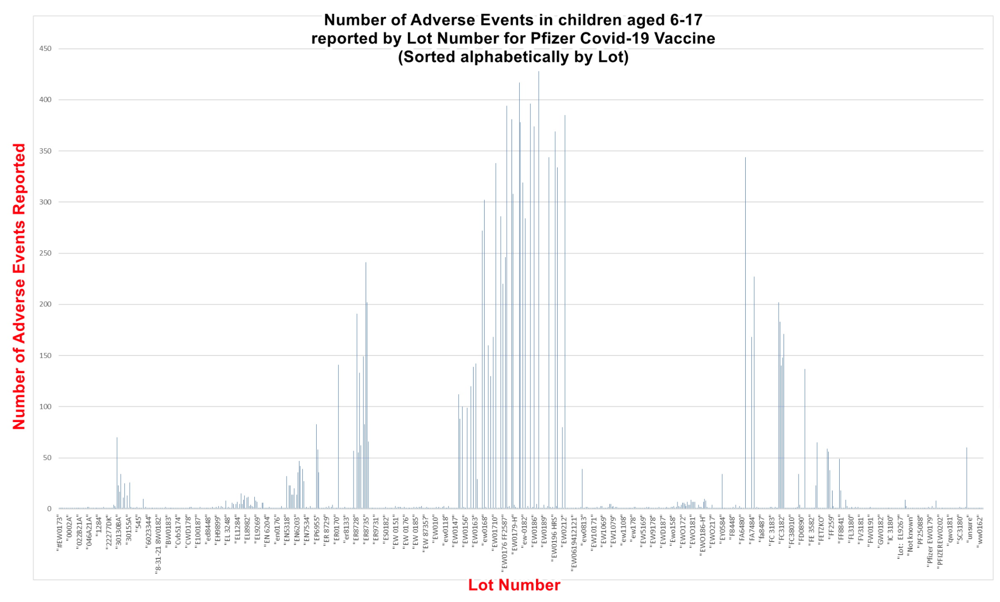
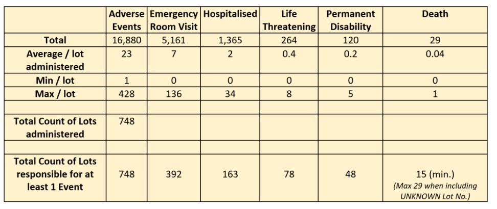
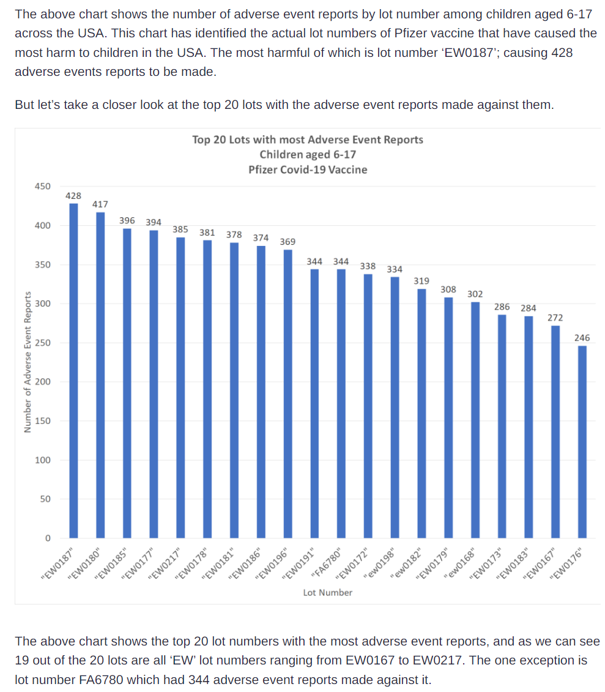
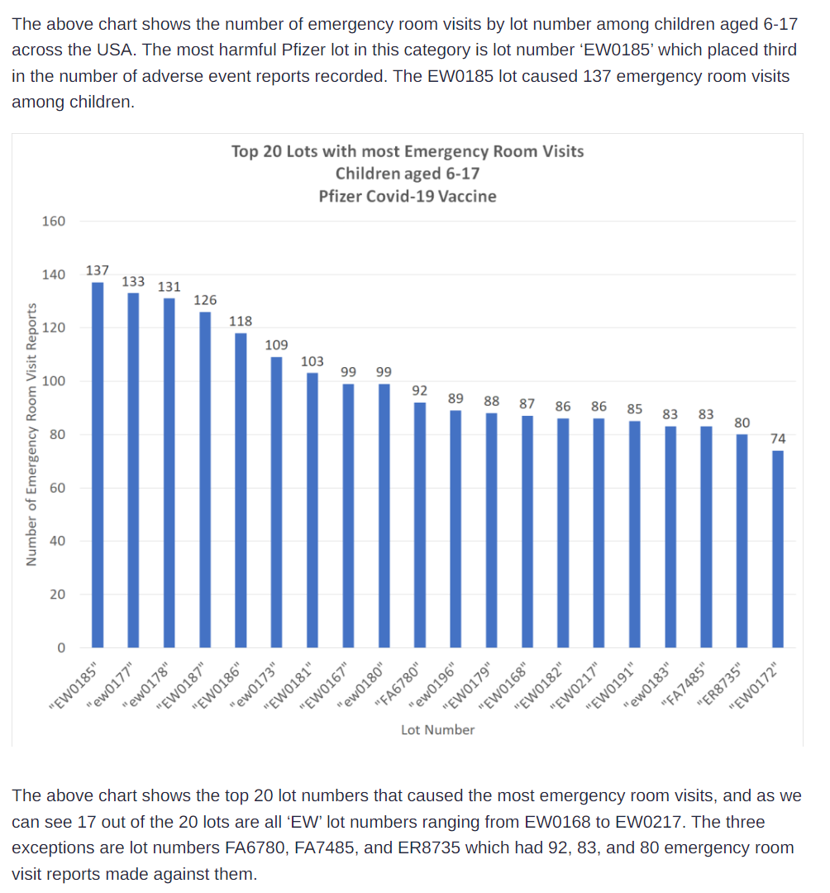
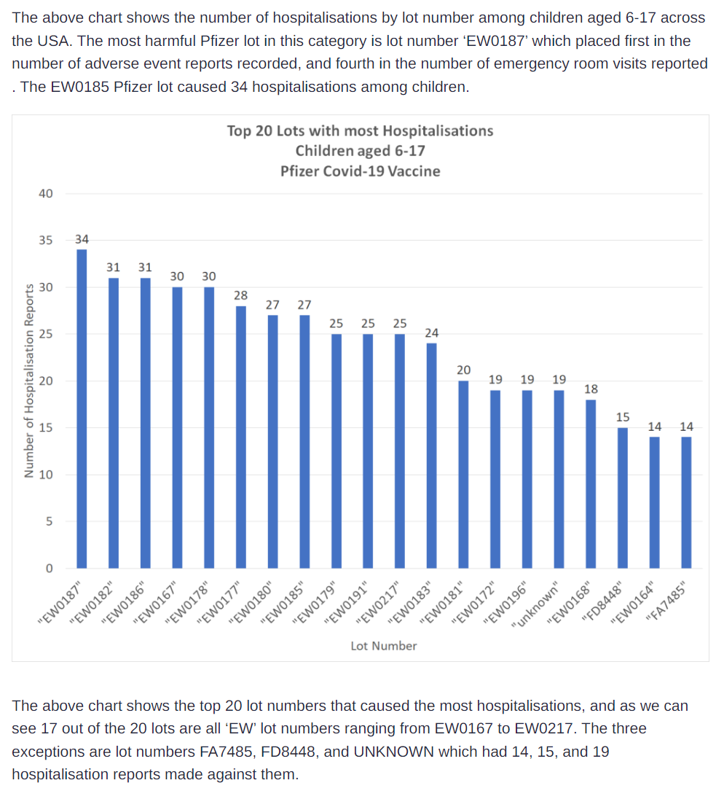
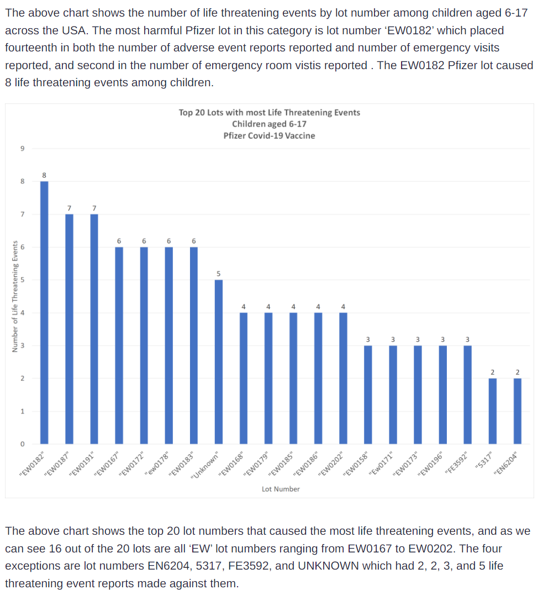
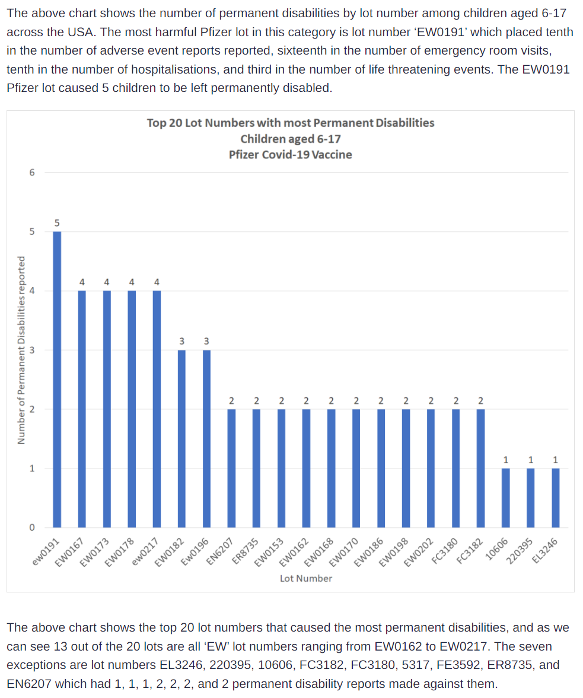
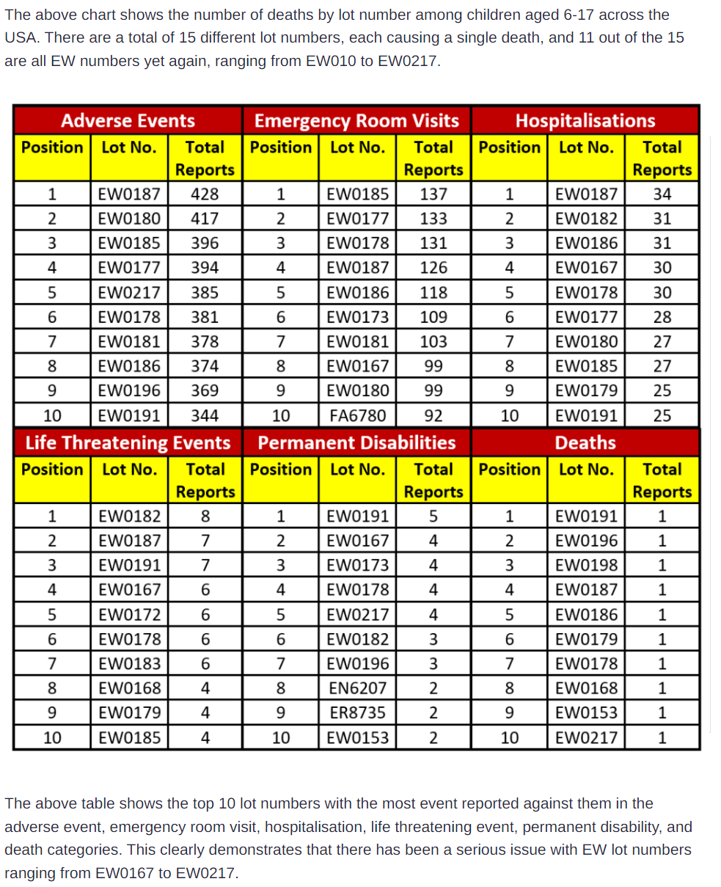

Worst Batches Effecting Children
home | Check Your Lot Number (Latest data) | Moderna 2021 Data | Pfizer 2021 Data | Janssen 2021 Data | Moderna (outside USA) 2021 Data | Pfizer (outside USA) 2021 Data | Janssen (outside USA) 2021 Data | International Deadly Lots | Severe | Lethal | Size Matters | Lot Sizes | Time till onset | Second Peak | Lot Expiry Dates | RNA Degradation | Causality | All or Nothing | Clusters | Symptom | Paralysis | Children | Gender | States | Geography | Japan | Case Reports | Whistle Blowers | EMA Leaks | Video Library | Treatment | Background | Download Source Code | Data Cleaning | Partner | Advertisements | Donate | Shop
Total Visitors for HowBad.info and HowBadisMyBatch.com since December 2021 : 178,414,955 (last updated June 11th 2023)
Please consider donating to support my efforts to carry on researching and providing information. This site is receiving many visitors. Please help me raise £300 to pay for the extra bandwidth needed
Craig Paardekooper
Batches Causing the Most Problems Source
The batches causing most problems in children are the Pfizer batches in the EW series
The chart below shows number of adverse events per batch for children only (aged 6 - 17)

The EW range is shown in green below. The EW series has a toxicity of 1200 to 2500. Historical records show a large number of EW batches having this toxicity. Yet the regulators failed to investigate.
The chart below shows number of adverse events per batch for all ages

Why are they administering the EW range to children?
Look at the chart above. Assuming that the differences in toxicity (as measured by number of adverse reactions) are due to differences in concentration of the active ingredients, then the EW range corresponds to half of the full dose. That's why they are giving it to children. They said that the were giving them a half dose - a "children's dose". "But half of something very toxic, is still very toxic - especially in a small body !!"
Fatal effects of EW series on adults
Take another look at the chart, and you will see that the number of adverse reactions for the EW series is still substantial - varying between 1500 and 2500 ADRs per batch.
Now, go to the Pfizer page of this website and input EW in the search box. Look at how many adults died following EW administration. Look at how many were disabled, or suffered life thtreatening illnesses...What they are forgetting / ignoring is that the EW series has killed and disabled many healthy adults already.
They are destroying these childrens lives. Injecting these toxins into children will cause them suffering that they cannot escape from. Internal injuries and damage will leave them crying almost continually, in constant pain...trapped in a hell body.
Fatal effects of EW series on Children
Here are the reported VAERS records for the effect of the EW series on children aged 6-17

Breaking it down by batch
A. Adverse reactions

B. Emergency room visits

C. Hospitalisations

D. Life threatening illness

E. Disability

F. Death

Contact
"Please support our work - we have 100,000 visitors every day. Changing minds - saving lives."

Created by Craig Paardekooper ©2022